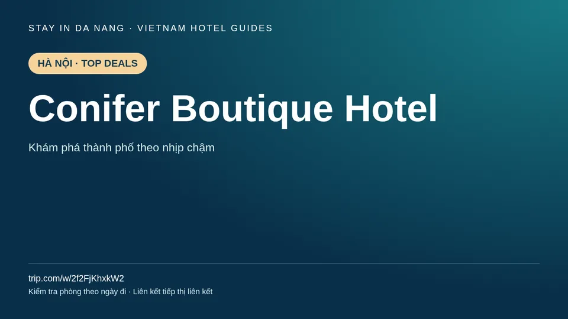

Conifer Boutique Hotel | 河內飯店
Conifer Boutique Hotel · 閱讀各飯店指南，依實際日期確認房型。

如何選擇客房
確認準確地址與行程交通。 比較房型、人數、餐食、稅金和取消條件。
如何選擇客房
確認準確地址與行程交通。 比較房型、人數、餐食、稅金和取消條件。 依實際入住日期確認空房及最終價格。
Hà Nội
可安排還劍湖與老城區，另一天走訪文廟或西湖。這些是城市行程建議，不表示飯店就在景點附近。
文字設計圖，並非飯店實拍。Top Deals / Hot Sellers 為參考分組，不代表已核實優惠或即時銷量。預訂連結為聯盟行銷連結，我們可能獲得佣金。